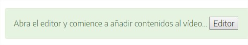

Este iDevice permite incorporar un vídeo a nuestro recurso (desde nuestro ordenador o a través de una URL) e introducir distintos tipos de preguntas a lo largo del mismo, pausando la reproducción hasta que el usuario conteste o continúe.
Al seleccionar el iDevice “Vídeo interactivo“ del listado de iDevices se nos mostrará lo siguiente en nuestro eXeLearning:
Se trata de un iDevice muy completo y potente. Si se tiene marcada la casilla "Modo avanzado", el iDevice, en modo edición, tendrá dos pestañas. Si no, las pestañas no se verán, y se mostrará únicamente el contenido de la primera.
Veamos cuál es el contenido de estas pestañas en el iDevice Vídeo interactivo:
Ajustes generales
En este apartado tendremos que escoger la fuente del vídeo pudiendo elegir entre tres opciones posibles: Fichero local, YouTube o Mediateca de EducaMadrid.
- Fichero local: como fichero local se aceptan los siguientes formatos: OGV/OGG, webm, mp4, flv. El fichero seleccionado se incorporará al paquete (.elp).
- YouTube: para vincular un vídeo de YouTube únicamente será necesaria su URL. Ejemplo: https://www.youtube.com/watch?v=v_rGjOBtvhI
- Mediateca: para vincular un vídeo de la Mediateca de EducaMadrid, necesitamos su URL. Ejemplo: https://mediateca.educa.madrid.org/video/3vmgyeluy8c35xzj
Una vez seleccionada la fuente del vídeo se nos indicará que ya podemos abrir el editor de vídeo para generar interacción con el mismo. En el caso de los ficheros locales, será necesario guardar el iDevice primero, para luego editarlo. De esta manera nos aseguramos de que el vídeo se incluya en el .elp. En cualquier caso, el iDevice proporciona las instrucciones necesarias. Habiendo seleccionado (o seleccionado y subido el vídeo, en el caso de un fichero local), podremos empezar a añadir interactividad:

Mostrar la puntuación: opción que permite determinar si se quiere mostrar al usuario la puntuación obtenida durante la reproducción y respuesta a las preguntas y/o actividades realizadas durante el vídeo interactivo.
Ajustes de idioma
En este apartado, que sólo vemos si tenemos marcado el Modo avanzado, podremos personalizar los textos predeterminados que componen el iDevice.
El editor de vídeo
Una vez configurada la fuente del vídeo sobre el cual queremos añadir interactividad, abrimos el editor de vídeo, que tiene el siguiente aspecto:
En él encontramos dos secciones de opciones. En la parte superior derecha tenemos las opciones de guardar y salir de la edición, y debajo, a la derecha del vídeo se presentan las siguientes opciones:
Ayuda: muestra una breve información con cada una de las opciones del editor.
Crear una portada: permite establecer un título y una pequeña introducción o una imagen que servirá de portada para el vídeo.
Crear un fotograma: permite introducir un fotograma de forma paralela al vídeo para mostrar información o generar una actividad para el usuario.
La herramienta es muy versátil y permite crear fotogramas de 8 tipos diferentes:
Texto
En la parte superior derecha tenemos un botón de ayuda que nos indica:
- Indique en qué segundo se debe mostrar el fotograma (Inicio)
- Si no quiere que el vídeo se detenga, indique cuándo se debe ocultar el fotograma (Fin)
- Pulse en
 para obtener el segundo actual
para obtener el segundo actual - Texto: Escriba un texto. Puede añadir listas, enlaces...
Nota: La configuración temporal es similar en el resto de categorías de fotograma, salvo en aquellos donde se requiera acción por parte del usuario, en donde la opción de detener el vídeo será de carácter obligatorio.
Imagen
Muy similar al de tipo texto en cuanto a funcionamiento, pero únicamente nos permitirá introducir una imagen, que se mostrará en el momento especificado. El usuario final verá la imagen y podrá abrirla en una ventana nueva de su navegador.